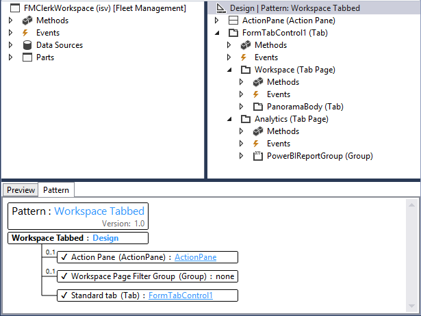

Analysen zu Arbeitsbereichen mit Power BI Embedded hinzufügen
[!include[banner](../includes/banner.md)]Note
Diese Funktion wird in Finance and Operations (Version 7.2 und höher) unterstützt.
Einführung
Dieses Thema zeigt, wie Sie in die Registerkarte Analysen eines Arbeitsbereichs einen Microsoft Power BI-Bericht einbetten. Für das hier gezeigte Beispiel erweitern wir den Arbeitsbereich Reservierungsverwaltung in der Anwendung Flottenmanagement, um der Registerkarte Analysen einen analytischen Arbeitsbereich hinzuzufügen.
Voraussetzungen
- Zugriff auf eine Entwicklerumgebung mit Plattform-Update 8 oder höher.
- Einen Analysebericht (PBIX-Datei), der mit Microsoft Power BI Desktop erstellt wurde, und der ein Datenmodell verwendet, das von der Entitätsspeicher-Datenbank gespeist wird.
Überblick
Egal, ob Sie einen vorhandenen Anwendungsarbeitsbereich erweitern oder einen eigenen neuen Arbeitsbereich anlegen, können Sie eingebettete analytische Ansichten nutzen, um informative und interaktive Ansichten Ihrer Geschäftsdaten bereitzustellen. Der Prozess für das Hinzufügen einer Registerkarte mit analytischem Arbeitsbereich umfasst 4 Schritte.
- Eine .pbix-Datei als Dynamics 365-Ressource hinzufügen.
- Eine Registerkarte für einen analytischen Arbeitsbereich definieren.
- Die .pbix-Ressource in die Registerkarte mit dem Arbeitsbereich einbetten.
- Optional: Erweiterungen hinzufügen, um die Ansicht zu personalisieren.
Note
Weitere Informationen zum Erstellen von analytischen Berichten finden Sie unter Erste Schritte mit Power BI Desktop. Diese Seite enthält wichtige Informationen, die Ihnen helfen, attraktive Lösungen für analytische Berichte zu erstellen.
Eine .pbix-Datei als Ressource hinzufügen
Bevor Sie anfangen, müssen Sie den Power BI-Bericht erstellen oder erhalten, den Sie in den Arbeitsbereich einbetten wollen. Weitere Informationen zum Erstellen von analytischen Berichten finden Sie unter Erste Schritte mit Power BI Desktop.
Gehen Sie wie folgt vor, um eine PBIX-Datei als Visual Studio-Projektartefakt hinzuzufügen.
Erstellen Sie ein neues Projekt im entsprechenden Modell.
Wählen Sie das Projekt im Projektmappen-Explorer aus, klicken Sie mit der rechten Maustaste und wählen Sie dann Hinzufügen>Neues Element.
Wählen Sie im Dialogfeld Neues Element hinzufügen unter Operations-Artefakte die Vorlage Ressource aus.
Geben Sie einen Namen ein, der für die Referenzierung des Berichts in X++-Metadaten verwendet wird, und klicken Sie dann auf Hinzufügen.

Suchen Sie die .pbix-Datei, die die Definition des analytischen Berichts enthält, und klicken Sie dann auf Öffnen.

Nachdem Sie die .pbix-Datei als Dynamics 365-Ressource hinzugefügt haben, können Sie die Berichte in Arbeitsbereiche einbetten und unter Verwendung von Menüeinträgen direkte Links hinzufügen.
Hinzufügen eines Registerkarten-Steuerelements zu einem Anwendungsarbeitsbereich
In diesem Beispiel erweitern wir den Arbeitsbereich Reservierungsverwaltung im Flottenmanagement-Modell, indem wir der Definition des Formulars FMClerkWorkspace die Registerkarte Analysen hinzufügen.
Die folgende Abbildung zeigt, wie das Formular FMClerkWorkspace im Designer in Microsoft Visual Studio aussieht.

Gehen Sie wie folgt vor, um die Formulardefinition für den Arbeitsbereich Reservierungsverwaltung zu erweitern.
- Öffnen Sie den Formulardesigner, um die Designdefinition zu erweitern.
- In dieser Designdefinition wählen Sie das oberste Element aus, Design | Muster: Arbeitsbereich operational
- Klicken Sie mit der rechten Maustaste und wählen Sie dann Neu>Registerkarte, um das neue Steuerelement FormTabControl1 hinzuzufügen.
- Wählen Sie im Formulardesigner FormTabControl1.
- Klicken Sie mit der rechten Maustaste und wählen Sie dann Neue Registerkartenseite, um eine neue Registerkartenseite hinzuzufügen.
- Geben Sie der Registerkarte einen sprechenden Namen, wie beispielsweise Arbeitsbereich.
- Wählen Sie im Formulardesigner FormTabControl1.
- Klicken Sie mit der rechten Maustaste und wählen Sie dann Neue Registerkartenseite.
- Geben Sie der Registerkarte einen sprechenden Namen, wie beispielsweise Analysen.
- Wählen Sie im Formulardesigner Analysen (Registerkartenseite).
- Legen Sie die Eigenschaft Bildbeschriftung auf Analytik und die Eigenschaft Automatische Deklaration auf Ja fest.
- Klicken Sie mit der rechten Maustaste auf das Steuerelement und wählen Sie dann Neu>Gruppe, um ein neues Formulargruppensteuerelement hinzuzufügen.
- Geben Sie der Formulargruppe einen sprechenden Namen, wie beispielsweise powerBIReportGroup.
- Wählen Sie im Formulardesigner PanoramaBody (Registerkarte) und ziehen Sie das Steuerelement auf die Registerkarte Arbeitsbereich.
- In dieser Designdefinition wählen Sie das oberste Element aus, Design | Muster: Arbeitsbereich operational
- Klicken Sie mit der rechten Maustaste und wählen Sie dann Muster entfernen.
- Klicken Sie erneut mit der rechten Maustaste und wählen Sie dann Muster hinzufügen>Arbeitsbereich mit Registerkarten.
- Führen Sie einen Build aus, um Ihre Änderungen zu überprüfen.
Die folgende Abbildung zeigt, wie das Design nach Anwendung dieser Änderungen aussieht.

Nachdem Sie die Steuerelemente für das Formular hinzugefügt haben, die für die Einbettung des Arbeitsbereichberichts verwendet werden, müssen Sie die Größe des übergeordneten Steuerelements definieren, sodass es zum Layout passt. Standardmäßig werden die Seite Filter und die Seite Registerkarte auf dem Bericht angezeigt. Sie können die Sichtbarkeit dieser Steuerelemente jedoch abhängig vom Zielpublikum des Berichts abändern.
Note
Für eingebettete Arbeitsbereiche empfehlen wir, der Konsistenz halber Erweiterungen zu verwenden, um die Seiten Filter und Registerkarte auszublenden.
Damit haben Sie die Aufgabe fertiggestellt, die Definition des Anwendungsformulars zu erweitern. Weitere Informationen zur Verwendung von Erweiterungen für Anpassungen finden Sie in Anpassen durch Erweiterungen und Überlagerung (This is an external link).
Hinzufügen einer X++-Geschäftslogik, um ein Viewer-Steuerelement einzubetten
Gehen Sie wie folgt vor, um eine Geschäftslogik hinzuzufügen, die das Steuerelement für den Bericht-Viewer initialisiert, das in den Arbeitsbereich Reservierungsverwaltung eingebettet ist.
Öffnen Sie den Formulardesigner FMClerkWorkspace, um die Designdefinition zu erweitern.
Drücken Sie F7, um auf den Code hinter der Codedefinition zuzugreifen.
Fügen Sie den folgenden X++-Code hinzu.
[Form] public class FMClerkWorkspace extends FormRun { private boolean initReportControl = true; protected void initAnalyticalReport() { if (!initReportControl) { return; } // Note: secure entry point into the Workspace's Analytics report if (Global::hasMenuItemAccess(menuItemDisplayStr(FMClerkWorkspace), MenuItemType::Display)) { // initialize the PBI report control using shared helper PBIReportHelper::initializeReportControl('FMPBIWorkspaces', powerBIReportGroup); } initReportControl = false; } /// <summary> /// Initializes the form. /// </summary> public void init() { super(); this.initAnalyticalReport(); } }Führen Sie einen Build aus, um Ihre Änderungen zu überprüfen.
Damit haben Sie die Aufgabe abgeschlossen, die Geschäftslogik hinzuzufügen, mit der das eingebettete Steuerelement für den Bericht-Viewer initialisiert wird. Die folgende Abbildung zeigt, wie der Arbeitsbereich nach Anwendung dieser Änderungen aussieht.

Note
Über die Registerkarten des Arbeitsbereichs unterhalb der Seitenüberschrift können Sie auf die vorhandene sofort ausgeführte Ansicht zugreifen.
Referenz
Die Methode PBIReportHelper.initializeReportControl
Dieser Abschnitt enthält Informationen über die Helferklasse, mit der ein Power BI-Bericht (PBIX-Ressource) in ein Formular-Gruppensteuerelement eingebettet wird.
Syntax
public static void initializeReportControl(
str _resourceName,
FormGroupControl _formGroupControl,
str _defaultPageName = '',
boolean _showFilterPane = false,
boolean _showNavPane = false,
List _defaultFilters = new List(Types::Class))
Parameter
| Name | Beschreibung |
|---|---|
| resourceName | Der Name der .pbix-Ressource. |
| formGroupControl | Das Formular-Gruppensteuerelement, auf das das Power BI-Berichtssteuerelement angewendet wird. |
| defaultPageName | Der Standardseitenname. |
| showFilterPane | Ein boolescher Wert, der angibt, ob der Filterbereich angezeigt (true) oder ausgeblendet (false) werden soll. |
| showNavPane | Ein boolescher Wert, der angibt, ob der Navigationsbereich angezeigt (true) oder ausgeblendet (false) werden soll. |
| defaultFilters | Die Standardfilter für den Power BI-Bericht. |